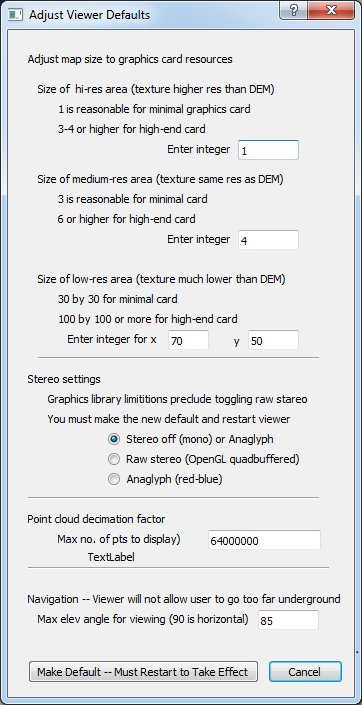

SETTING DEFAULT RESOURCES
You can set the default settings for several viewer parameters that have a large impact on hardware resources.
The most important parameter is the map size since this typically determines the load on the GPU.
The map is defaulted to a small size to accomodate minimal hardware configurations and should be increased for better hardware.
The same is true of the size of point clouds to be displayed.
The size is set low but can be increased substantially with a better GPU.
After changing a resource parameter, you must hit the 'Make Default" button and restart the viewer for the change to take effect.
The defaults are stored in a file called 'CustomParms.txt' in the 'bin' directory with the Fusion3D executable.
The parameters from this file are read on program initialization.
Again, this file is man-readable and editable and can be changed outside the viewer if that is easier.

The optimal map settings depend on the size and speed of the graphics card.
The recommended settings for 3 types of GPU hardware are shown in the figure below.
Unfortunately, it is very difficult to predict when the limits of the graphics card will be exceeded
and values too high typically just crash or hang up the viewer.
The optimal settngs for the high-resolution and medium-resolution map areas depend on both graphics card memory and speed.
The high-res MrSID textures are particularly resource intensive.
Since they are typically 10 times the resolution of the DEMs, they have on the order of 100 times the data for a given map area.
Setting this area too high may crash the program but may also lead to very long redraw times and very slow zoom and pan.
The optimal setting for size of the low-resolution area depends on the application.
For a single tile, the lower setting of 70-by-50 will easily cover the entire tile.
(Setting the values larger than necessary does not inflict any performance penalty.)
For multiple tiles, larger low-res areas give better context but require more time to redraw if you make frequent moves.
Stereo is defaulted off since most hardware cannot support it.
The stereo setting can be toggled from mono to anaglyph (red-blue) stereo and back using the 'Stereo' menu.
However, a basic limitation in the graphics library that the Fusion3D viewer is built on precludes switching on the fly
between mono and the raw (active shutter glasses) stereo.
To do this, you must change the setting in the 'Options' menu and then restart the viewer.
Lidar point clouds can be huge.
The Fusion3D viewer does not do level-of-detail for the points so is constrained as to how many points it can display.
This level is set relatively low and can be increased for higher-end hardware.
The viewer is typically constrained to keep the viewer's eye above ground level.
You can tilt the terrain from where you looking straight down on it until you are 5 degrees above the horizon.
However, there are some situations where viewing the underside of the terrain is useful.
One such case is underground bunkers or storage areas that can be detected by finding stairs leading down to them.
Here, being able to see the terrain from below highlights these stairs and increasing the angle limit can accomodate this.